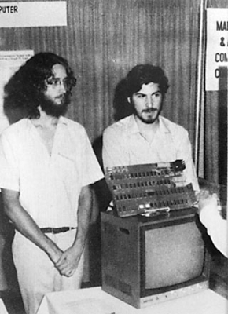

Chương 5

rong suốt những năm cuối của thập niên 60 của thế kỷ 20, có rất nhiều luồng văn hóa du nhập cùng lúc ở San Francisco và thung lũng Santa Clara. Cuộc cách mạng công nghệ bắt đầu bùng nổ với sự phát triển của các nhà thầu quân sự, tiếp nối sau đó là các công ty điện tử, nhà sản xuất bộ vi xử lý, các hãng thiết kế trò chơi điện tử, và các công ty máy tính. Sự bùng nổ đến chóng mặt này kéo theo sự xuất hiện của một tiểu khu văn hóa công nghệ tin tặc - những kẻ trộm cắp viễn thông, các nhà nghiên cứu truyền thông, dân sưu tầm công nghệ và những chuyên gia máy tính thuần túy - bao gồm cả những kỹ sư không phù hợp với mô hình của HP và những đứa trẻ không hòa hợp được với làn sóng nổi dậy của các phong trào nổi loạn thời kỳ này. Có những nhóm học giả nghiên cứu những tác động của LSD (một loại ma túy gây ảo giác), gồm có Doug Engelbart của Trung Tâm Nghiên Cứu Mở Rộng ở Palo Alto, người sau này đã góp phần phát triển chuột máy tính và giao diện đồ họa cho người sử dụng, và Ken Kesey, người đã tổ chức một buổi thác loạn có sử dụng thuốc kích thích với một ban nhạc gia đình sau trở thành Grateful Dead(10). Thời kỳ này bắt đầu xuất hiện phong trào phản văn hóa híp pi (hippie) được khởi xướng từ những thế hệ trẻ Vùng Vịnh, và các nhà hoạt động chính trị nổi loạn bắt nguồn từ phong trào tự do ngôn luận ở Berkeley. Trên hết chúng ta phải kể đến sự xuất hiện của các phong trào tự phát khác nhau hướng đến con đường đi tìm sự giác ngộ cá nhân: Thiền và Ấn Độ giáo, thiền định và yoga, gào thét và cảm giác tù túng, Esalen (11) và các phương pháp trị liệu bằng xung điện.

Daniel Kottke và Jobs cùng với chiếc máy tính Apple I tại hội chợ máy tính được tổ chức tại thành phố Atlantic năm 1976s
Sự dung hòa giữa quyền lực danh nghĩa và quyền lực thực tế, giữa sự giác ngộ tâm linh và công nghệ được Steve Jobs thể hiện thông qua những buổi thiền định hàng sáng, các buổi dự thính các lớp vật lý tại Stanford, các buổi làm việc đêm tại Atari, và ước mơ về một sự nghiệp kinh doanh của riêng mình. "Có một điều gì đó đang diễn ra ở đây", ông bồi hồi nhớ lại. "Dòng âm nhạc tuyệt vời nhất khởi nguồn từ đây, ban nhạc Grateful Dead, Jefferson Airplane, Joan Baez, Janis Joplin, mạch tích hợp hay những thứ như cuốn Whole Earth Catalog(12) đều được sinh ra trên mảnh đất này. Ban đầu dân công nghệ và dân hippie (phản văn hóa) không có quan hệ tốt với nhau.
Rất nhiều người trong phong trào phản văn hóa coi máy tính là thứ đáng nghi ngại và lập dị như Orwel(13), thứ mà họ cho rằng khởi nguồn từ Lầu Năm Góc và hệ thống quyền lực tại đây. Trong cuốn “The Myth of the Machine‟‟ (truyền thuyết về cỗ máy), nhà sử học Lewis Mumford đã cảnh báo rằng máy tính đang dần lấy đi sự tự do và làm suy đồi “giá trị cuộc sống đang ngày càng được nâng cao.” Sự ra đời của cuốn sách “Do not fold, spindle or multilate” (14) - lệnh cấm sử dụng thẻ bấm lỗ - đã giáng một đòn mạnh vào giai đoạn này, trở thành lời cáo buộc đanh thép, mỉa mai của phe đối lập.
Tuy nhiên đầu những năm 1970 bắt đầu có sự chuyển biến. Trong bài nghiên cứu về sự hội tụ của phong trào phản văn hóa đối với ngành công nghiệp máy tính có tên "What the Dormouse Said" (Điều Dormouse đà nói) John Markoff viết, “Điện toán từng bị lên án và bị coi như là một công cụ kiểm soát quan liêu giờ đây đã trở thành một biểu tượng của cá tính và sự tự do”. Nó cũng được thể hiện như một nét đặc biệt trong ca từ của tập thơ 1967 của Richard Brautigan, “All Watched Over by machines of Loving Grace” (tất cả đều đang chiêm ngưỡng cỗ máy của sự hoàn mỹ) và tư tưởng thống nhất đã được chứng nhận khi Timothy Leary tuyên bố rằng các máy tính cá nhân đã trở thành một loại “chất gây nghiện” mới và những năm sau đó điều chỉnh lại câu thần chú nổi tiếng của mình để tuyên bố, "Bật lên, khởi động, cắm vào”. Nhạc sĩ Bono, người sau này trở thành một người bạn của Jobs, thường thắc mắc với ông rằng tại sao những kẻ đắm mình trong đá
- thuốc kích thích - những cuộc nổi loạn của phong trào phản văn hóa ở vùng Vịnh lại góp phần tạo nên ngành công nghiệp máy tính cá nhân như vậy. "Những kẻ “tạo ra” thế kỷ 21 là những kẻ “đập đá”, dân hippies đi dép lê đến từ vùng bờ Tây như Steve, bởi vì họ nhìn nhận mọi vấn đề theo cách riêng - nổi loạn," Bono nhận xét. "Các xã hội phân cấp có tôn ti ở các vùng bờ Đông, Anh, Đức, và Nhật bản không khuyến khích những suy nghĩ khác biệt như vậy. Những năm sáu mươi của thế ký XIX đã hình thành nên lối suy nghĩ hỗn loạn, một thứ chất xúc tác vô hình giúp định hình nên một thế giới chưa bao giờ tồn tại."
Một người khuyến khích các cư dân của phong trào phản văn hóa tạo ra một trào lưu phổ biến mà người ta thường gọi là các hacker (các tin tặc), đó chính là Stewart Brand. Là một người có kinh nghiệm và tầm nhìn xa trông rộng, ông đã tạo ra niềm vui và những ý tưởng qua nhiều thập kỷ, Brand cũng là một trong những người tham gia vào một trong sáu mươi nghiên cứu về LSD (15) đầu tiên ở Palo Alto. ông cùng với đồng nghiệp của mình là Ken Kesey tạo ra “ Những hành trình thử thách” (acid - celebrating Trips Festival), xuất hiện trong phần mở đầu của cuốn The Electric Kool-Aid Acid Test (cuộc thử nghiệm của dân hip - pi) của Tom Wolfe, và làm việc với Doug Engelbart để tạo ra một buổi thuyết trình rất có ảnh hưởng về sau với sự biến hóa khôn lường của âm thanh và ánh sáng về những công nghệ mới được gọi là “Cha đẻ của những bản demo” (Mother of All Demos). "Hầu hết các thế hệ chúng tôi lúc bấy giờ đều khinh miệt máy tính, coi nó như hiện thân của sự kiểm soát tập trung," Brand sau đó lưu ý. "Thế nhưng một đội ngũ nhỏ, sau này gọi là hacker, đã ôm máy tính đồng thời biến chúng thành công cụ của sự tự do. Điều đó hóa ra lại là con đường thật sự hướng đến tương lai.
Brand điều hành Whole Earth Truck store(16) (Cửa hàng lưu động toàn cầu), bắt đầu như một chiếc xe tải lưu động, bán các công cụ cần thiết và tài liệu giáo dục, và đến năm 1968 ông quyết định mở rộng nó phát triển thành Whole Earth Catalog. Trên trang bìa đầu tiên của cuốn Catalog là hình ảnh nổi tiếng của trái đất được chụp từ không gian; với tít phụ là “Acess to Tools” (Tiếp cận mọi công cụ) với ý nghĩa đơn giản là công nghệ có thể là một người bạn của chúng ta.
Brand đã viết trên trang nhất của ấn bản đầu tiên rằng, "Một thế giới của cái tôi cá nhân đang ngày càng được coi trọng trong đó có quyền tự quyết được học hành, tìm nguồn cảm hứng riêng, tự tạo không gian riêng, và chia sẻ những tìm tòi của mình với bất cứ ai quan tâm. Những công cụ hỗ trợ quá trình này là được Whole Earth Catalog tìm kiếm và phát triển." Buckminster Fuller bắt đầu một bài thơ sau đó:".. Tôi thấy Chúa trong các dụng cụ và cơ chế làm việc đáng tin cậy".
Jobs trở thành một fan hâm mộ của Whole Earth. Jobs đặc biệt bị chinh phục bởi ấn bản cuối cùng, phát hành vào năm 1971, khi ông vẫn còn học trung học, và đã mang nó theo tới trường đại học và sau đó đến trang trại All One Farm. "Trên bìa sau của ấn bản cuối cùng" Jobs nhớ lại, "là một bức ảnh một con đường quê vào buổi sáng sớm, và bạn có thể thấy mình đang bước trên đó nếu bạn là người ưa khám phá. Phía dưới bức ảnh là câu: „ Hãy luôn khát khao, hãy cứ dại khờ.
(Stay Hungry, stay Foolish.)‟” Brand coi Jobs là một trong những hiện thân tinh khiết nhất của sự pha trộn văn hóa mà Catalog đang kiếm tìm để vinh danh. “Steve ở ngay điểm giao thoa của phong trào phản văn hóa và công nghệ," ông nói. "ông ấy có ý niệm về những công cụ ai cũng sử dụng được. "Catalog của Brand đã được xuất bản với sự giúp đỡ của Viện Portola, một tổ chức dành riêng cho lĩnh vực non trẻ của ngành giáo dục máy tính. Viện Portola cũng đã góp phần trong việc thành lập People‟s Computer Company (Máy tính dành cho mọi người), đây hoàn toàn không phải là một công ty mà là một tờ tin tức và là một tổ chức hoạt động với phương châm “đem sức mạnh của máy tính đến với mọi người” (Computer power to the people). Thỉnh thoảng lại diễn ra một bữa tối “thân mật” được tổ chức vào ngày thứ Tư bất kỳ và có một lần hai trong số những nhân vật quan trọng, Gordon French và Fred Moore, đã quyết định thành lập một câu lạc bộ chính thức hơn nơi mọi người có thể chia sẻ những thông tin về thiết bị điện tử cá nhân.
Họ đã cực kỳ phấn khích bởi sự xuất hiện của ấn phẩm Popular Mechanics (những thợ máy nổi tiếng) vào tháng Giêng năm 1975 với một bộ máy tính cá nhân đầu tiên, Altair, trên trang bìa.
Altair không đắt lắm, chỉ khoảng 495 đô - la cho một khối các bộ phận được hàn với một tấm bảng mạch được làm một cách đơn giản - nhưng đối với dân ghiền sưu tầm đò công nghệ và các chuyên gia máy tính thì sự ra đời của Altair báo hiệu buổi bình minh của một kỷ nguyên mới. Bill Gates và Paul Alien đã đọc cuốn tạp chí này và bắt tay vào thử chạy phiên bản BASIC(17), một ngôn ngữ lập trình dễ sử dụng, trên Altair. Nó cũng gây sự chú ý của Jobs và Wozniak. Và khi một bộ Altair đã đến với tạp chí “Máy tính dành cho mọi người”, nó trở thành tâm điểm trong cuộc họp đầu tiên của câu lạc bộ mà French và Moore đã từng cùng nhau quyết định thành lập.
Câu lạc bộ máy tính Homebrew
Câu lạc bộ máy tính Homebrew được biết đến như một dấu hiệu về sự hợp nhất Whole Earth (toàn cầu), giữa phong trào phản văn hóa và công nghệ. Nó sẽ trở thành một kỷ nguyên máy tính cá nhân, một thứ na ná thời kỳ khai sinh ra những quán cà phê Turk‟s cho đến thời kỳ của Tiến sĩ Johnson, một nơi mà những ý tưởng đã được trao đổi và phổ biến rộng rãi. Moore đã viết những tờ bướm cho các cuộc họp đầu tiên, được tổ chức vào ngày 05 Tháng Ba 1975, trong nhà để xe của công viên Menlo của Pháp: "Bạn đang tự làm một cái máy tính, một thiết bị đầu cuối, một chiếc TV, hay một chiếc máy đánh chữ của riêng mình? Nếu vậy, có thể bạn sẽ muốn đến tham gia vào hội những người cùng chí hướng." Tờ quảng cáo ghi.
Alien Baum phát hiện ra tờ rơi trên bảng thông báo của HP và gọi cho Wozniak, và Woz đã đồng ý đi với anh ta. "Đêm đó hóa ra là một trong những đêm quan trọng nhất của cuộc đời tôi", Wozniak nhớ lại. Khoảng ba mươi người khác cũng đến, ùa ra khi cánh cửa nhà để xe bật mở, và họ thay phiên nhau mô tả điều họ quan tâm. Wozniak, sau này đã thừa nhận lúc đó ông vô cùng căng thẳng và ông cũng cho hay rằng ông thích "trò chơi điện tử, phim trả phí cho các khách sạn, thiết kế máy tính khoa học, và thiết kế thiết bị đầu cuối truyền hình", theo biên bản được chuẩn bị bởi Moore. Có một buổi ra mắt giành cho chiếc Altair mới, nhưng quan trọng hơn là Wozniak được nhìn thấy những bản thông số kỹ thuật cho bộ vi xử lý.
Khi Woz suy nghĩ về các bộ vi xử lý - một con chip có bộ xử lý trung tâm tổng - ông đã có một cái nhìn sâu sắc. ông đã bắt tay vào thiết kế một thiết bị đầu cuối, với một bàn phím và màn hình có khả năng kết nối với một máy tính mini từ xa. Sử dụng một bộ vi xử lý, Woz có thể đặt một số lưu lượng của máy tính mini bên trong một thiết bị đầu cuối, do đó nó có thể trở thành một máy tính để bàn nhỏ độc lập. Đó là một ý tưởng lâu dài: bàn phím, màn hình, và máy tính đều nằm trong một gói tích hợp cá nhân. "Toàn bộ ý tưởng về một máy tính cá nhân đã nảy ra trong đầu tôi," ông nói. "Đêm đó, tôi bắt đầu phác thảo ra giấy những gì sau này được gọi là Apple I"
Lúc đầu, ông dự định sử dụng bộ vi xử lý tương tự như bộ vi xử lý dùng cho Altair, một chiếc Intel 8080. Nhưng mỗi cái đều có "chi phí gần như nhiều hơn tiền thuê nhà hàng tháng của tôi", vì vậy ông tìm kiếm một phương án thay thế. ông tìm thấy một bộ trong chiếc Motorola 6800 mà một người bạn ở HP đã mua với giá 40 đô - la một cái. Sau đó ông đã phát hiện ra một con chip mà MOS Technologies làm tương tự như vậy nhưng chỉ có 20 đô - la. Nó sẽ làm cho máy tính của Woz có giá cả phải chăng, nhưng nó cũng buộc ông phải đầu tư lâu dài. Chip của Intel cuối cùng trở thành loại chip chuẩn công nghiệp, và chúng sẽ ảnh hưởng tới Apple khi các dòng máy tính Apple không tương thích với chúng.
Sau mỗi ngày làm việc, Wozniak sẽ về nhà ăn tối, xem truyền hình và sau đó quay lại HP để làm việc tới khuya với cái máy tính của mình, ở trong phòng làm việc riêng, ông tháo rời các bộ phận của chiếc máy tính, xác định vị trí của chúng, và gắn vào bảng mạch chủ của mình. Sau đó ông bắt đầu viết các phần mềm khiến bộ vi xử lý hiển thị hình ảnh trên màn hình. Bởi vì ông không đủ tiền để trả cho thời gian sử dụng máy tính, ông đã viết mã bằng tay. Sau vài tháng chiếc máy đã sẵn sàng chạy thử. "Tôi đã gõ một ký tự trên bàn phím và tôi đã bị sốc! Các chữ được hiển thị trên màn hình". Đó là vào Chủ Nhật ngày 29 tháng 6, năm 1975, một cột mốc quan trọng đối với dòng máy tính cá nhân. "Đó là lần đầu tiên trong lịch sử", Wozniak sau này nhớ lại, "bất kỳ ai cũng có thể gõ một ký tự trên bàn phím và sẽ thấy nó hiển thị lên ngay màn hình."
Jobs đã thực sự bị ấn tượng, ông hỏi Wozniak một cách hồ hởi: cái máy tính có nối mạng được không? Liệu họ có thể thêm ổ đĩa để tăng thêm dung lượng cho bộ nhớ không? ông cũng bắt đầu giúp Woz hoàn thiện các phần. Đặc biệt quan trọng là các con chip có bộ nhớ truy cập ngẫu nhiên động (RAM động). Jobs thực hiện một vài cuộc gọi và đã lấy được vài con từ Intel, miễn phí.
"Steve là một người như thế", Wozniak nói. "Ý tôi là, cậu ấy biết cách thương thảo với một đại diện bán hàng. Tôi thì không bao giờ có thể làm được điều đó. Tôi quá nhút nhát."
Jobs bắt đầu theo Wozniak đến một số buổi gặp mặt của câu lạc bộ Homebrew, mang theo màn hình TV và giúp lắp đặt các bộ phận. Các buổi gặp mặt lúc đó đã thu hút hơn một trăm người thực sự quan tâm và đã được chuyển đến khán phòng của Trung tâm gia tốc tuyến tính Stanford.
Buổi gặp mặt được chủ trì bởi Lee Felsenstein- một người có định hướng và phong thái tự do, ông cũng là đại diện tiêu biểu của sự pha trộn giữa thế giới điện toán và phong trào phản văn hóa. Lee đã từng bỏ học một trường kỹ thuật, tham gia vào phong trào tự do ngôn luận, và trở thành một nhà hoạt động chống chiến tranh, ông cũng từng viết bài cho tờ báo tổng hợp Barb Berkeley và cuối cùng trở lại làm một kỹ sư máy tính.
Woz thường quá nhút nhát để phát biểu trong các cuộc họp, nhưng sau khi mọi người vây xung quanh chiếc máy tính của Woz, thì ông đã tự hào khoe về thành quả (quá trình làm chiếc máy) của mình. Moore đã cố gắng truyền tinh thần trao đổi và chia sẻ vào Homebrew hơn là tinh thần thương mại. "Chủ đề của câu lạc bộ," Woz nói, "là „hãy giúp đỡ người khác‟”. Đó là một trong những nguyên tắc đạo đức của một hacker công nghệ rằng thông tin nên được miễn phí và không ai có quyền kiểm soát chúng. "Tôi thiết kế Apple I vì tôi muốn chia sẻ nó miễn phí cho mọi người," Wozniak nói.
Điều này không phải là một viễn cảnh mà Bill Gates chấp nhận. Sau khi ông và Paul Alien đã hoàn thành việc chạy phiên bản BASIC cho Altair, Gates sợ các thành viên của Homebrew đã sao lại nó và chia sẻ mà không trả tiền cho ông. Vì vậy, ông đã viết một bức thư mà sau này trở nên nổi tiếng, tới câu lạc bộ: "Khi phần lớn những người yêu công nghệ phải dè chừng, thì hầu hết các bạn đang ăn cắp phần mềm của chính mình. Đó có phải là công bằng?... Điều bạn làm đó chính là ngăn chặn việc viết các phần mềm tốt. Ai sẽ là người dành thời gian và tâm huyết cho những thứ vô bổ?... Tôi sẽ đánh giá cao những lá thư từ bất cứ ai muốn trả tiền."
Steve Jobs, tương tự như vậy, đã không chấp nhận quan điểm cho rằng những phát minh của Wozniak, có thể là Blue Box hay một chiếc máy tính, là để miễn phí. Vì vậy, ông đã thuyết phục Wozniak dừng việc gửi bản phác họa của ông. Dù sao hầu hết mọi người không có thời gian để tự làm ra nó,
Jobs thuyết phục. "Sao chúng ta không làm và bán các bảng mạch cho họ?" Đó là một ví dụ về sự cộng sinh giữa Jobs và Woz. "Mỗi lần tôi muốn thiết kế một cái gì đó khá khẩm, Steve sẽ tìm ra cách để kiếm tiền cho chúng tôi", Wozniak nói. Woz thừa nhận rằng ông sẽ không bao giờ nghĩ đến việc làm điều đó một mình. "Tôi chưa bao giờ nghĩ mình sẽ bán máy tính. Đó là Steve đã nói,
'Chúng ta hãy giữ bí mật và bán một ít thôi.'"
Jobs đã lên kế hoạch thuê một chàng trai ông biết tại Atari vẽ những bảng mạch và sau đó in ra khoảng năm mươi bản hoặc nhiều hơn thế. Việc đó sẽ tốn khoảng 1.000 đô - la, cộng thêm phí cho nhân viên thiết kế. Họ có thể bán chúng với giá 40 đô - la một chiếc và lợi nhuận dự tính là 700 đô - la. Wozniak không chắc là họ có thể bán hết. "Tôi không biết làm thế nào chúng tôi có thể hoàn vốn," ông nhớ lại. ông đã gặp rắc rối với chủ nhà vì séc thanh toán (bouncing checks) và bây giờ phải trả tiền nhà hàng tháng bằng tiền mặt.
Jobs biết cách làm thế nào để lôi kéo Wozniak. ông không cho rằng họ chắc sẽ kiếm được tiền, nhưng thay vào đó họ sẽ có một cuộc phiêu lưu thú vị. "Ngay cả nếu chúng ta trắng tay, thì chúng ta sẽ có một công ty", Jobs nói trong khi lái chiếc Volkswagen của mình. "Một lần trong đời, chúng ta sẽ có một công ty." Điều này hấp dẫn Wozniak, thậm chí nhiều hơn bất kỳ viễn cảnh làm giàu nào. ông nhớ lại, "Tôi đã vui mừng khi nghĩ chúng tôi sẽ như thế. Hai người bạn thân nhất thành lập một công ty. Ôi, ngay lập tức tôi biết mình muốn làm điều đó. Tại sao lại không chứ?"
Để có được số tiền mà họ cần, Wozniak đã bán cái máy tính HP 65 của mình với giá 500 đô - la, mặc dù người mua cuối cùng kiên quyết mua bằng một nửa giá đó. về phần mình, Jobs đã bán chiếc Volkswagen của mình với giá 1.500 đô - la. Nhưng người mua đã đến để tìm ông hai tuần sau đó và cho biết, động cơ đã bị hỏng, và Jobs đồng ý trả một nửa cho việc sửa chữa. Mặc dù gặp phải những trở ngại nhỏ, nhưng giờ, cộng với khoản tiết kiệm của riêng thì họ có khoảng 1.300 đô - la vốn lưu động, bản thiết kế cho một sản phẩm, và một bản kế hoạch. Họ sẽ bắt đầu công ty máy tính của riêng mình.
Apple ra đời
Bây giờ đã đến lúc họ quyết định thành lập một doanh nghiệp, họ cần một cái tên. Jobs một lần nữa đến thăm trang trại All One Farm, nơi mà trước đây ông đã cắt tỉa các cây táo Gravenstein, và Woz đã đón ông tại sân bay. Trên đường về Los Altos, họ bàn tán xoay quanh những lựa chọn.
Họ xem xét một số từ công nghệ điển hình, chẳng hạn như ma trận (Matrix), và một số từ mới, chẳng hạn như Executek, và một số tên đơn giản, như Personal Computer (Công ty máy tính cá nhân). Jobs muốn hoàn thành các giấy tờ, nên quyết định sẽ chọn tên vào ngày hôm sau. Cuối cùng Jobs đề xuất cái tên Apple Computer (Công ty máy tính Apple). "Nó là một thức quả trong các chế độ ăn chay của tôi," ông giải thích. "Tôi vừa trở về từ trang trại táo. Nó nghe có vẻ vui vẻ, có sinh khí, và không đáng sợ. Apple đứng cạnh từ „computer‟". Hơn nữa, nó sẽ đứng trước cái tên “Atari” trong danh bạ điện thoại." Ông nói với Wozniak rằng nếu không có cái tên nào khá hơn vào chiều hôm sau, họ sẽ nhất trí chọn Apple. Và họ đã làm.
“Apple”. Đó là một sự lựa chọn thông minh. Ngay từ cái tên, nó đã cho thấy sự thân thiện và đơn giản. Nó cố gắng để vừa khác biệt, vừa đơn giản như một phần của chiếc bánh. Nó mang hơi hướng của phong trào phản văn hóa, nguyên sơ gần gũi với thiên nhiên, nhưng thực sự mang phong cách Mỹ. “Apple” và “Computer” được đặt cạnh nhau cho thấy sự không liên quan đến nực cười. "Nó chẳng có nghĩa gì," Mike Markkula, người sau này đã trở thành chủ tịch đầu tiên của Apple. "Vì vậy, nó buộc bạn phải đầu tư suy nghĩ về nó. “Apple” (táo) và Computer (máy tính), chẳng có gì liên quan đến nhau! Vì thế, nó đã giúp chúng tôi phát triển nhận thức về thương hiệu."
Wozniak vẫn chưa sẵn sàng cam kết dành toàn bộ thời gian ở công ty mới. ông là một người đã gắn bó với HP, hoặc vì ông nghĩ, và muốn làm việc toàn thời gian của mình ở đó. Jobs thấy rằng ông cần một đồng minh để “quây” Wozniak và phân xử nếu có bất đồng. Vì vậy, ông mời Ron Wayne, một người bạn và cũng là một kỹ sư trung tuổi ở Atari, người đã từng thành lập một công ty bán hàng tự động.
Wayne biết rằng không dễ khiến Woz bỏ HP, và cũng không cần thiết ngay lập tức. Thay vào đó, quan trọng là thuyết phục Woz rằng những thiết kế máy tính của anh ấy sẽ được sở hữu bởi các đồng sự ở Apple. "Woz luôn coi mình là cha đẻ của các bảng mạch ông đã phát triển, và muốn sử dụng chúng trong các ứng dụng khác hoặc để HP sử dụng chúng", Wayne nói. "Jobs và tôi nhận ra rằng các bảng mạch sẽ là nền tảng cốt lõi của Apple. Chúng tôi đã dành hai giờ để thảo luận kín tại căn hộ của tôi, và tôi đã có thể khiến Woz chấp nhận điều này." ông giải thích rằng một kỹ sư tầm cỡ sẽ được nhớ đến chỉ khi anh ta hợp tác với một nhà tiếp thị tuyệt vời, và điều này yêu cầu Woz phải cam kết đóng góp những bản thiết kế của mình vào công ty mới. Jobs rất ấn tượng và biết ơn đến mức cho Wayne 10% cổ phần trong quan hệ đồng sự mới, biến anh ta thành một người hòa giải khi Jobs và Woz có bất đồng.
"Họ rất khác biệt, nhưng họ tạo thành một đội mạnh", Wayne nói. Nhiều lúc Jobs dường như bị điều khiển bởi ma quỷ, trong khi Woz ngây ngô như bị các thiên thần đùa giỡn. Jobs có vẻ ngoài bạo dạn đã giúp ông làm được điều mình muốn, nhiều khi bằng cách điều khiển người khác.
Jobs lôi cuốn, thậm chí mê hoặc, nhưng cũng lạnh lùng và tàn bạo. Woz, ngược lại, nhút nhát và khả năng giao tiếp hạn chế khiến anh ta có vẻ ngọt ngào một cách trẻ con. "Woz rất giỏi trong một số lĩnh vực, nhưng cậu ấy gần giống như một nhà bác học, vì cậu ấy vốn đã rất nhút nhát khi phải tiếp xúc với những người không quen biết", Jobs nói. "Chúng tôi là một đôi ăn ý. "Jobs đã vô cùng kinh ngạc bởi kỹ thuật điêu luyện của Wozniak, còn Wozniak lại kinh ngạc trước khả năng điều hành kinh doanh của Jobs. "Tôi không bao giờ muốn đối phó với mọi người và chèn ép người khác, nhưng Steve triệu tập tất cả những người cậu ấy không biết và buộc họ phải làm việc,"
Wozniak nhớ lại. "Cậu ấy hà khắc với mọi người mà cậu cho rằng người đó không thông minh, nhưng không bao giờ đối xử với tôi một cách thô bạo, ngay cả những năm tháng sau này khi tôi không thể trả lời các câu hỏi của cậu ấy theo cách mà ông ấy mong muốn."
Ngay cả sau khi Wozniak bị thuyết phục rằng mẫu thiết kế máy tính mới của ông nên trở thành tài sản đóng góp cho Apple, thì ông vẫn cảm thấy rằng ông phải cho HP biết về nó đầu tiên, vì ông đang làm việc ở đó. "Tôi tin rằng tôi có trách nhiệm cho HP biết về những gì tôi thiết kế trong khi làm việc cho họ. Đó là một việc làm đúng đắn và đạo đức." Vì vậy, ông đã đưa các bản thiết kế của mình cho các nhà quản lý tại HP vào mùa xuân năm 1976. Giám đốc điều hành cấp cao tại cuộc họp đã rất ấn tượng, và dường như xúc động mạnh, nhưng cuối cùng ông ta nói đó không phải là thứ mà HP có thể phát triển. Nó là một sản phẩm dành cho những người đam mê công nghệ, ít nhất là cho đến thời điểm hiện tại, và nó cũng không phù hợp với phân khúc thị trường chất lượng cao của công ty. "Tôi đã thất vọng," Wozniak nhớ lại, "nhưng giờ đây tôi thấy thoải mái khi tham gia cùng các đồng sự ở Apple."
Ngày 01 tháng 4 năm 1976, Jobs và Wozniak đã đến căn hộ của Wayne ở Mountain View để thảo ra hợp đồng thỏa thuận hợp tác. Wayne nói rằng ông đã có một số kinh nghiệm trong việc “viết lách” và nắm khá rõ luật, vì vậy ông tự biên soạn một bản tài liệu dài ba trang. Các trang “bản thảo luật” thể hiện rõ con người Wayne. Mỗi phần bản thảo bắt đầu với những sắc thái khác nhau:
“Kèm theo sau đây là... Chú ý thêm trong phần dưới đây là... Theo nguyên văn là..., khi xét đến quyền lợi phân chia của từng cá nhân thì.. Nhưng sự phân chia cổ phần và lợi nhuận rất rõ ràng -
45% - 45% -10%, và hợp đồng này cũng quy định rằng bất kỳ chi phí nào nhiều hơn 100 đô- la buộc phải có sự nhất trí của ít nhất hai trong số các đồng sự. Hợp đồng còn ghi rõ: "Wozniak chịu trách nhiệm chính và tổng quan cho bộ phận kỹ thuật điện tử; Jobs chịu trách nhiệm giám sát chủ yếu bộ phận kỹ thuật điện tử và Marketing, và Wayne sẽ chịu trách nhiệm phụ trách bộ phận kỹ thuật cơ khí và tài liệu sổ sách." Jobs ký chữ thường, trong khi Wozniak thì nắn nót, còn Wayne thì nguệch ngoạc.
Wayne đột nhiên trở nên lo lắng. Khi Jobs bắt đầu lập kế hoạch vay và chi tiêu nhiều tiền hơn, ông nhớ lại sự thất bại của công ty mình. Ông không muốn đi vào vết xe đổ lần nữa. Jobs và Wozniak không có tài sản cá nhân, nhưng Wayne (người lo lắng về một cuộc khủng hoảng tài chính toàn cầu) lại có “của để giành” - những đồng tiền vàng giấu dưới nệm. Bởi vì họ đã gây dựng Apple đơn giản chỉ là sự hợp tác nhiều hơn là một công ty, các cá nhân tự chịu trách nhiệm về các khoản nợ, và Wayne đã lo sợ khả năng các chủ nợ sẽ bám theo. Vì vậy, ông trở lại văn phòng ở Hạt Santa Clara chỉ mười một ngày sau đó với một "tuyên bố rút lui" và sửa đổi các thỏa thuận hợp tác trong hợp đồng. "Theo như xem xét và thỏa thuận của các bên, Wayne sau đây sẽ chấm dứt tư cách là một „cổ đông‟”. Thỏa thuận ghi nhận thanh toán cho Wayne 10% cổ phần, ông nhận về 800 đô-la, và một thời gian ngắn ngay sau đó lại nhận thêm 1.500 đô-la nữa.
Nếu ông ở lại và giữ 10 % cổ phần của mình thì vào cuối năm 2010 số cổ phần đó đã có giá trị khoảng 2,6 tỉ đô - la. Thay vào đó ông trở về Pahrump, Nevada, sống một mình trong một ngôi nhà nhỏ, nơi ông quản lý những bán hàng tự động và sống nhờ bảo hiểm xã hội. Sau này ông tuyên bố ông không hề nuối tiếc. "Đó là quyết định sáng suốt nhất đối với tôi tại thời điểm đó. Cả Jobs và Woz đều thực sự bị cuốn vào đó, và tôi biết khả năng của mình và chưa sẵn sàng cho hành trình đó."
Jobs và Wozniak đã cùng lên sân khấu trong một bài thuyết trình tại Câu lạc bộ máy tính Homebrew ngay sau khi họ ký kết thành lập của Apple. Wozniak đã đưa ra một trong những bảng mạch mới sản xuất của họ và mô tả các bộ vi xử lý, bộ nhớ tám kilobyte, và phiên bản BASIC ông đã viết. Woz cũng nhấn mạnh những gì ông gọi là phần quan trọng: “một bàn phím dễ sử dụng thay vì một bảng điều khiển ngu ngốc khó hiểu đặt trước mặt với một loạt các đèn chiếu sáng và thiết bị chuyển mạch." Sau đó đến lượt Jobs, ông chỉ ra rằng Apple, không giống như Altair, nó có tất cả các thành phần cần thiết để tích hợp. Sau đó, ông thách thức họ với một câu hỏi: Mọi người chịu móc hầu bao mình bao nhiêu để trả cho một máy tính tuyệt vời như thế này? ông đã cố gắng để cho họ thấy giá trị tuyệt vời của Apple, ông sẽ sử dụng lối hành văn hoa mỹ, cường điệu hóa đó vào các bài thuyết trình sản phẩm của mình trong nhiều năm sau này.
Khán giả đã không quá ấn tượng. Apple có một bộ vi xử lý giá rẻ, không phải là Intel 8080.
Nhưng có một người quan trọng đang âm thầm nghe ngóng tình hình. Anh ta là Paul Terrell, và vào năm 1975 anh ta đã mở một cửa hàng máy tính, lấy tên là Byte, đặt trên đại lộ Camino Real ở công viên Menlo.
Một năm sau đó anh ta đã có ba cửa hàng và có ý định xây dựng một chuỗi cửa hàng xuyên quốc gia. Jobs đã vui mừng để cho anh ta một bản giới thiệu riêng. "Hãy xem này," Jobs nói. "Anh sẽ thích cái này." Terrell đã rất ấn tượng, đưa cho Jobs và Woz card của mình. "Giữ liên lạc nhé," Paul nói.
"Tôi đang giữ liên lạc đây", Jobs vừa nói vừa bước chân trần vào Byte Shop ngay ngày hôm sau. Jobs đã thực hiện giao dịch. Terrell đồng ý đặt 50 máy tính. Nhưng có một điều kiện: Anh ta không muốn một bảng mạch in rời rạc giá chỉ 50 đô-la, ròi sau đó khách hàng sẽ lại phải mua tất cả các con chip và tự lắp ráp. Chỉ những dân đam mê công nghệ phần cứng mới thích thú với điều này, nhưng không phải phần đa khách hàng đều làm được điều đó. Thay vào đó ông muốn các bảng mạch được lắp ráp đầy đủ. Và ông sẵn sàng trả khoảng 500 đô - la cho mỗi bảng mạch hoàn chỉnh, bằng tiền mặt khi giao hàng.
Jobs ngay lập tức gọi cho Wozniak đang ở HP. "Anh rảnh không?" ông hỏi. Wozniak cho biết ông không. Jobs vẫn tiếp tục cho Woz hay. "Tôi đã bị sốc, hoàn toàn sốc", Wozniak nhớ lại.
"Tôi sẽ không bao giờ quên khoảnh khắc đó."
Để điền vào các đơn đặt hàng, họ cần khoảng 15.000 đô -la giá trị các bộ phận. Cha của Alien Baum, kẻ chơi khăm thứ ba từ thời còn học trung học với Jobs ở Homested, đã đồng ý cho họ vay 5.000 đô - la. Jobs đã cố gắng vay mượn thêm từ một ngân hàng ở Los Altos, nhưng người quản lý nhìn anh và, không ngạc nhiên, từ chối, ông đến Haltek Supply (19) và đề nghị đổi một ít một cổ phần trong Apple lấy các bộ phận, nhưng người chủ cho rằng họ chỉ là "hai thằng nhãi vắt mũi chưa sạch" và từ chối. Alcorn tại Atari chịu bán chip chỉ khi họ trả trước bằng tiền mặt. Cuối cùng, Jobs đã có thể thuyết phục người quản lý của Cramer Electronics gọi cho Paul Terrell để xác nhận rằng ông đã thực sự cam kết đặt một đơn hàng trị giá 25.000 đô - la. Terrell lúc đó đang dự một hội nghị khi thấy điện thoại báo ông đang có một cuộc gọi khẩn cấp (Jobs gọi liên tục). Người quản lý Cramer nói với ông rằng “hai thằng nhãi vắt mũi chưa sạch” có một đơn đặt hàng từ Byte.
Có thật không? Terrell xác nhận rằng đúng như vậy, và các cửa hàng đồng ý việc giao trước bộ phận với một thẻ tín dụng có giá trị trong vòng ba mươi ngày.
Một nhóm trong ga -ra
Ngôi nhà của Jobs ở Los Altos đã trở thành điểm lắp ráp năm mươi bảng mạch của Apple I phải được chuyển đến các cửa hàng Byte trong vòng ba mươi ngày, khi đáo hạn các chi phiếu mua các bộ phận. Tất cả nhân lực được huy động: Jobs, Wozniak, Daniel Kottkevà bạn gái cũ Elizabeth Holmes của anh này (người đã bỏ đi khỏi giáo phái mà cô tham gia), và cô em gái đang mang thai của Jobs, Patty. Phòng ngủ bỏ trống của cô cũng như bàn nhà bếp và nhà để xe đều được điều động làm không gian làm việc. Holmes, người đã từng tham gia các lớp học trang sức, được giao nhiệm vụ hàn các con chip. "Nhìn chung tôi đã làm tốt, nhưng tôi cũng đã làm nóng chảy mất vài con," bà nhớ lại. Điều này đã làm Jobs không vui. "Chúng ta chẳng có nhiều chip để mà lãng phí đâu", ông đã mắng đúng. Jobs chuyển Holmes sang giữ sổ sách kế toán và thủ tục giấy tờ trên bàn nhà bếp, và tự hàn lấy. Khi họ hoàn thành một bảng mạch, họ sẽ chuyển cho Wozniak. "Tôi sẽ cắm mỗi bảng lắp ráp vào TV và bàn phím để kiểm tra xem nó có chạy hay không," ông nói. "Nếu được, tôi đặt nó vào hộp. Nếu không, tôi sẽ phải tìm ra những mối hàn không đúng chỗ."
Paul Jobs dẹp hẳn những cái xe ô tô cũ đang được sửa chữa sang một bên để nhóm Apple có toàn bộ không gian của nhà để xe. Ông đặt một bàn làm việc cũ dài, treo một sơ đồ của máy tính lên mảng tường thạch cao ông mới làm, và tạo ra các hàng ngăn kéo có nhãn cho từng thành phần, ông cũng tạo một hộp ghi đặt trong bóng đèn nhiệt để họ có thể kiểm tra bảng mạch máy tính bằng cách cho chúng chạy qua đêm ở nhiệt độ cao. Khi có xung đột quá căng thẳng, Paul xuất hiện ngay lập tức đến bên con trai mình và bình tĩnh hỏi. "Có chuyện gì thế?" ông sẽ hỏi rằng "Lại có ai chọc tức con hả?" Thỉnh thoảng ông lại hỏi mượn lại cái TV để có thể xem những phút cuối của trận bóng đá. Trong những giờ giải lao, Jobs và Kottke sẽ đi ra ngoài và chơi guitar trên bãi cỏ.
Clara Jobs đã không thấy phiền khi hàng đống các phụ tùng và khách lạ choẤn gần hết căn nhà mình, nhưng bà đã thất vọng và lo lắng về chế độ ăn uống ngày càng kỳ quặc của con trai bà.
"Bà ấy đưa mắt và dừng lại ở phần ăn ảm đạm của con trai", Holmes nhớ lại. "Bà ấy chỉ muốn anh được khỏe mạnh, và anh ấy có những tuyên bố kỳ cục kiểu như là, „tôi là một người ăn chay và sẽ chỉ ăn hoa quả được các trinh nữ hái dưới ánh trăng.'"
Sau một tá bảng mạch lắp ráp đã được Wozniak kiểm duyệt, Jobs chuyển chúng lên xe và đưa đến cửa hàng Byte. Terrell khá ngạc nhiên. Không có bộ sạc nguồn, thùng máy, màn hình, hoặc bàn phím, ông đã mong đợi nhiều hơn thế. Nhưng Jobs đã thuyết phục được, và cuối cùng Terrel đã đồng ý nhận hàng và trả tiền.
Sau ba mươi ngày, Apple gần như chắc chắn sẽ thu được lợi nhuận. "Chúng tôi đã có thể tạo ra bảng mạch với giá rẻ hơn chúng tôi nghĩ, bởi vì tôi đã mua được các bộ phận với giá cả phù hợp", Jobs nhớ lại. "Vì vậy, năm mươi bảng mạch chúng tôi bán cho các cửa hàng Byte đủ để trả cho tất cả vật liệu chúng tôi cần để làm một trăm cái bảng." Lúc đó họ có thể thu về lợi nhuận thực sự bằng cách bán năm mươi chiếc còn lại cho bạn bè và các thành viên ở Homebrew.
Elizabeth Holmes chính thức trở thành nhân viên kế toán bán thời gian với mức lương 4 đô - la một giờ, cô lái xe từ San Francisco xuống một lần một tuần và ghi chép những số liệu trên sổ séc của Jobs vào sổ cái. Để Apple trở thành một công ty thực sự, Jobs thuê một dịch vụ trả lời và dịch này sẽ chịu trách nhiệm chuyển tin nhắn đến mẹ của mình. Ron Wayne đã thiết kế logo, sử dụng phong cách vẽ đường trang trí cầu kỳ mà thời kỳ nữ hoàng Victoria, người ta sử dụng để minh họa tiểu thuyết. Trên logo, ông vẽ hình Newton ngồi dưới gốc cây được đóng khung bởi một câu trích dẫn của Wordsworth (20): "Tâm trí luôn mãi độc hành qua những vùng đất lạ của tư tưởng." Đó là một lời đề từ khác biệt, chỉ phù hợp với chân dung Wayne hơn là với Apple Computer. Có lẽ những dòng thơ của Wordworth dùng để mô tả về những chiến binh tham gia vào phong trào khởi xướng cuộc Cách mạng Pháp sẽ là một lựa chọn tốt hơn: "Hạnh phúc là mỗi khi thức giấc ta thấy mình vẫn còn sống / Nhưng trẻ mãi không già mới thực sự là thiên đường" (Bliss was it in that dawn to be alive / But to be young was very heaven!) như Wozniak sau đó đã từng rất tâm đắc, "Chúng tôi đã tham gia vào cuộc cách mạng lớn nhất đã từng xảy ra, tôi nghĩ thế. Tôi rất hạnh phúc khi được là một phần của nó."
Woz đã bắt đầu suy nghĩ về các phiên bản tiếp theo của chiếc máy tính này, do đó, họ bắt đầu gọi mẫu máy hiện tại là Apple I. Jobs và Woz sẽ ngược xuôi ở khắp vùng Camino Real, cố gắng kiếm các cửa hàng điện tử để bán nó. Ngoài năm mươi chiếc đã được bán cho các cửa hàng Byte và năm mươi chiếc bán cho bạn bè, họ còn tạo thêm một trăm chiếc nữa để bán lẻ. Không lấy gì làm ngạc nhiên khi Jobs và Woz nảy sinh mâu thuẫn: Wozniak muốn bán chúng với giá chỉ đủ bù đắp cho những chi phí tạo ra chúng, nhưng Jobs muốn lãi cao. Jobs đã thắng thế. Mức giá bán lẻ mà Jobs chọn gấp khoảng ba lần chi phí để tạo ra các bảng mạch và tăng 33% so với 500 đô - la giá bán buôn mà Terrell và các cửa hàng khác trả. Kết quả họ thu được 666,66 đô - la. "Tôi luôn thích những dãy số lặp", Wozniak nói. "Số điện thoại cho dịch vụ quay số vui của tôi là 255-6666."
Không ai trong họ biết rằng trong Sách Khải Huyền, số 666 tượng trưng cho "con số của Quỷ", nhưng họ đã sớm phải đối mặt với khiếu nại, đặc biệt là sau khi “666” là biểu tượng cho bộ phim đình đám năm đó, The Omen(21). (Trong năm 2010 một trong những mẫu máy Apple I được bán tại cuộc đấu giá của Christie với giá 213.000 đô-la.)
Bài báo “lá cải” đầu tiên về chiếc máy tính mới, xuất hiện trên số ra tháng Bảy năm 1976 ấn bản của Interface, một tạp chí giành cho người thích sưu tầm đồ công nghệ (tạp chí này giờ không còn tồn tại nữa). Jobs và bạn bè vẫn làm những bảng mạch thủ công trong nhà mình, nhưng bài báo lại ám chỉ ông là giám đốc Marketing và "là một cựu cố vấn riêng cho Atari." Điều đó khiến Apple trông như một công ty thực sự. "Steve ngoại giao với rất nhiều các câu lạc bộ máy tính nhằm giữ lợi thế kiểm soát ngành công nghiệp non trẻ này", bài báo cho biết và nó còn dẫn lời giải thích của Jobs rằng, "Nếu chúng ta có thể phân tích được những nhu cầu, cảm xúc và động lực của người tiêu dùng, chúng ta có thể đáp ứng một cách thích đáng bằng việc đem lại cho họ những gì họ muốn."
Cho đến lúc này, họ đã có một số đối thủ cạnh tranh khác, ngoài Altair, đặc biệt phải kể đến IMSAI 8080 và SOL-20 của Processor Technology Corporation (Công ty chuyên sản xuất các bộ xử lý cho máy tính). Những mẫu sau này được thiết kế bởi Lee Felsenstein và Gordon French của Câu lạc bộ máy tính Homebrew. Tất cả đều có cơ hội được trưng bày trong ngày lễ Quốc tế Lao Động năm 1976, tại hội chợ máy tính cá nhân thường niên lần đầu tiên, được tổ chức ở một khách sạn ọp ẹp với hành lang lót vẤn mục nát tại thành phố Atlantic, New Jersey. Jobs và Wozniak đã bắt một chuyến bay TWA (22) đến Philadelphia, mang theo một hộp xì gà, chiếc Apple I và một chiếc máy khác với các mẫu thử nghiệm cho dòng máy nâng cấp tiếp theo mà Woz đang nghiên cứu. Ngồi ở hàng sau họ là Felsenstein, người đã ngắm nghía chiếc Apple I và tuyên bố một câu "hoàn toàn không mấy ấn tượng." Wozniak đã mất bình tĩnh bởi cuộc trò chuyện ở hàng ghế phía sau. "Chúng tôi có thể nghe thấy họ nói chuyện về Apple I trước khi họ bàn luận về vấn đề kinh doanh của họ", ông nhớ lại, "họ còn sử dụng từ viết tắt cho các thuật ngữ kinh doanh mà chúng tôi chưa bao giờ nghe thấy trước đây."
Wozniak đã dành phần lớn thời gian của mình trong phòng khách sạn, tinh chỉnh mẫu mới của mình, ông đã quá nhút nhát để đứng tại bàn nơi đặt thẻ ghi tên chiếc Apple ở gần cuối phòng triển lãm. Daniel Kottke bắt xe lửa xuống từ Manhattan, nơi ông theo học tại Columbia, và anh ta có nhiệm vụ sắp xếp chiếc bàn trưng bày trong khi Jobs đi lang thang kiểm tra các khu vực của các đối thủ cạnh tranh, ông chẳng có ấn tượng với những gì mình nhìn thấy. Wozniak, người mà ông vô cùng tin cậy là kỹ sư mạch tốt nhất, và Apple I (và các mẫu nâng cấp dòng máy này) có thể đánh bại các đối thủ cạnh tranh về mặt chức năng. Tuy nhiên, SOL-20 có kiểu dáng đẹp hơn. Nó có một vỏ hợp kim loại bắt mắt, bàn phím, bộ sạc nguồn, và dây điện. Apple I, trái lại, nhếch nhác như người sáng tạo ra nó.
Chú thích:
(10) Là một ban nhạc Rock của Mỹ được thành lập vào năm 1965 tại khu vực vùng Vịnh San Francisco
(11) Một liệu pháp massage.
(12) “Catalog toàn trái đất - cuốn sách được Steward Brand và nhóm của ông viết vào cuối những năm 1960- đã từng được Steve Jobs ví như “Google trên giấy”.
(13) George Orwell tên thật là Eric Blair, sinh ra tại Ấn Độ. Nghề nghiệp ban đầu của ông là nhà báo, nhưng thời nay người ta biết đến ông như là một nhà văn, với 2 tác phẩm để đời: Animal Farm (Trại súc vật) và 1984. Cả 2 tác phẩm này đều đả kích chế độ độc tài toàn trị.
(14) Một tác phẩm của George A. Fierheller, viết về những lỗ hổng của thẻ bấm lỗ - những phát minh đầu tiên, tiền thân của ngành công nghiệp điện toán.
(15) Một loại ma túy tổng hợp
(16) Được coi như tiền thân của Whole Earth Catalog - một ấn phẩm phản văn hóa của người Mỹ được ấn hành vào giữa năm 1968 và 1972, sau đó ra định kỳ đến tận năm 1988. WEC chỉ liệt kê toàn bộ các sản phẩm đi kèm giá và nhà cung cấp như quần áo, sách vở, công cụ, máy móc... những thứ được sử dụng trong cuộc sống hàng ngày chứ không bán chúng.
(17) BASIC là viết tắt của Beginner's Allpurpose Symbolic Instruction Code trong tiếng Anh, là một ngôn ngữ lập trình bậc cao, đơn giản, dễ sử dụng, nhằm đơn giản hóa quá trình lập trình. BASIC được phát minh vào năm 1963 bởi các giáo sư John George Kemeny và Thomas Eugene Kurtz thuộc viện Đại học Dartmouth (Dartmouth College).
(18) Một loại café Thổ Nhĩ Kỳ rất nổi tiếng trong đó rất nhiều người nổi tiếng như Tiến sĩ Johnson, người viết cuốn từ điển Anh ngữ đầu tiên, thường lui tới tiêm cà phê Turk‟s Head.
(19) Một công ty cung cấp linh kiện điện tử.
(20) William Wordsworth là một thi sỹ lãng mạn Anh vào thế kỷ XVIII.
(21) Một bộ phim kinh dị được sản xuất lần đầu tiên vào năm 1976
(22) T. w. A (Trans World Airlines)- Hãng hàng không xuyên lục địa